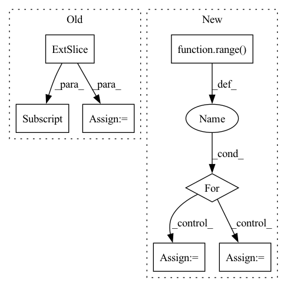

Pattern ID :15951
Before Change
bg_delta = torch.nn.functional.smooth_l1_loss(
qs_pred[:, 0] * (1 - obs["fg_mask"].float()),
torch.zeros_like(qs_pred)[:, 0] ,
reduction="none",
).mean(dim=(1, 2))
bg_loss = (bg_delta * sampling_weigths).mean()
loss = q_loss + bg_loss
loss.backward()
After Change
bg_mask = 1 - obs["fg_mask"]
q_bg_pred = []
for b in range( bg_mask.shape[0]):
y, x = torch.where(bg_mask[b])
i = torch.randint(low=0, high=len(y), size=()).item()
q_bg_pred.append(qs_pred[b, 0, y[i], x[i]])
q_bg_pred = torch.stack(q_bg_pred)
q_bg_delta = torch.nn.functional.smooth_l1_loss(In pattern: SUPERPATTERN
Frequency: 5
Non-data size: 7
Instances Fragment ID: 53707795
Project Name: wkentaro/reorientbot
Commit Name: c0652660c3e748a3405e22a324ef4e518d03c096
Time: 2021-05-05
Author: www.kentaro.wada@gmail.com
File Name: examples/grasp_with_intent/agent.py
M Class Name: DqnAgent
N Class Name: DqnAgent
M Method Name: _update_q(2)
N Method Name: _update_q(2)
M Parent Class: Agent
N Parent Class: Agent
M File Name: examples/grasp_with_intent/agent.py
N File Name: examples/grasp_with_intent/agent.py
M Start Line: 132
M End Line: 178
N Start Line: 132
N End Line: 185
Before Change
// attention is batch x time x heads x time_to_attend
// average over batches, heads + only keep prediction attention and attention on observed timesteps
if attention_prediction_horizon is None: // average over all horizons
attention = out["attention"][..., : self.hparams.encode_length] .mean(
dim=average_dims + [2]
) // todo: how to handle zero attention due to shorter encode length?
attention = attention / attention.sum(-1).unsqueeze(-1) // renormalizeAfter Change
// average over heads + only keep prediction attention and attention on observed timesteps
attention = out["attention"][:, attention_prediction_horizon, :, : out["encode_lengths"].max()].mean(1)
// reoder attention
for i in range( len(attention)): // very inefficient but does the trick
if 0 < out["encode_lengths"][i] < attention.size(1):
attention[i, -out["encode_lengths"][i] :] = attention[i, : out["encode_lengths"][i]].clone()
attention[i, : attention.size(1) - out["encode_lengths"][i]] = 0.0
if average_batches: // if to average over batches
static_variables = static_variables.mean(dim=0) Fragment ID: 53707793
Project Name: jdb78/pytorch-forecasting
Commit Name: 79cfec0818dbe78d8773534e6ce8f5fd578c3c3a
Time: 2020-06-22
Author: beitner.jan@bcg.com
File Name: temporal_fusion_transformer_pytorch/model/__init__.py
M Class Name: TemporalFusionTransformer
N Class Name: TemporalFusionTransformer
M Method Name: interpret_output(4)
N Method Name: interpret_output(4)
M Parent Class: pl.LightningModule
N Parent Class: pl.LightningModule
M File Name: temporal_fusion_transformer_pytorch/model/__init__.py
N File Name: temporal_fusion_transformer_pytorch/model/__init__.py
M Start Line: 555
M End Line: 605
N Start Line: 553
N End Line: 610
Before Change
acc = []
f1 = []
for emo_ind in range(4):
preds_i = np.argmax(preds[:, emo_ind] , axis=-1)
truths_i = truths[:, emo_ind]
acc.append(torch.sum(truths_i == preds_i).item() / len(preds))
f1.append(f1_score(truths_i, preds_i, average="weighted"))After Change
accs = []
f1s = []
for i in range( num_emo):
pred_i = preds[:, i]
truth_i = truths[:, i]
acc = torch.sum(pred_i == truth_i).item() / total
f1 = f1_score(truth_i, pred_i, average="weighted")
accs.append(acc) Fragment ID: 53707799
Project Name: wenliangdai/modality-transferable-mer
Commit Name: 38664b152a63fb703932bd0b32dfdf90fb6b3d48
Time: 2020-06-15
Author: wenliang.dai.1995@gmail.com
File Name: src/evaluate.py
M Class Name: AnonimousClass
N Class Name: AnonimousClass
M Method Name: eval_iemocap(2)
N Method Name: eval_iemocap(3)
M Parent Class:
N Parent Class:
M File Name: src/evaluate.py
N File Name: src/evaluate.py
M Start Line: 147
M End Line: 166
N Start Line: 155
N End Line: 177
Before Change
mask_value = 0 // value is ignored
for hh_start, hh_end in zip(hh_split[:-1], hh_split[1:]):
for ww_start, ww_end in zip(ww_split[:-1], ww_split[1:]):
mask[hh_start:hh_end, ww_start:ww_end] = mask_value
mask_value += 1
mask = tf.convert_to_tensor(mask)
// return mask
mask = tf.reshape(mask, [height // window_height, window_height, width // window_width, window_width])After Change
hh_split = [0, height - window_height, height - shift_height, height]
ww_split = [0, width - window_width, width - shift_width, width]
mask_value, total_ww, mask = 0, len(ww_split) - 1, []
for hh_id in range( len(hh_split) - 1):
hh = hh_split[hh_id + 1] - hh_split[hh_id]
rr = [tf.zeros([hh, ww_split[id + 1] - ww_split[id]]) + (id + mask_value) for id in range(total_ww)]
mask.append(tf.concat(rr, axis=-1))
mask_value += total_ww
mask = tf.concat(mask, axis=0)
// return mask
Fragment ID: 53707749
Project Name: leondgarse/keras_cv_attention_models
Commit Name: bcd22fc3dc9889d71afdf773b78b74d3211754be
Time: 2022-04-06
Author: leondgarse@gmail.com
File Name: keras_cv_attention_models/swin_transformer_v2/swin_transformer_v2.py
M Class Name: AnonimousClass
N Class Name: AnonimousClass
M Method Name: make_window_attention_mask(6)
N Method Name: make_window_attention_mask(6)
M Parent Class:
N Parent Class:
M File Name: keras_cv_attention_models/swin_transformer_v2/swin_transformer_v2.py
N File Name: keras_cv_attention_models/swin_transformer_v2/swin_transformer_v2.py
M Start Line: 111
M End Line: 119
N Start Line: 110
N End Line: 118